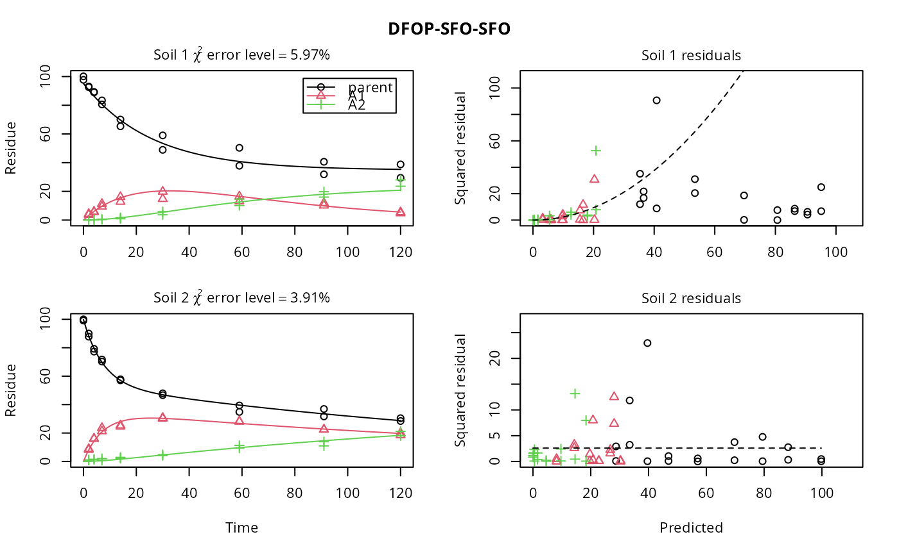

experimental_data_for_UBA.RdThe 12 datasets were extracted from active substance evaluation dossiers published by EFSA. Kinetic evaluations shown for these datasets are intended to illustrate and advance error model specifications. The fact that these data and some results are shown here do not imply a license to use them in the context of pesticide registrations, as the use of the data may be constrained by data protection regulations.
Preprocessing of data was performed based on the recommendations of the FOCUS kinetics workgroup (FOCUS, 2014) as described below.
Datasets 1 and 2 are from the Renewal Assessment Report (RAR) for imazamox (France, 2015, p. 15). For setting values reported as zero, an LOQ of 0.1 was assumed. Metabolite residues reported for day zero were added to the parent compound residues.
Datasets 3 and 4 are from the Renewal Assessment Report (RAR) for isofetamid (Belgium, 2014, p. 8) and show the data for two different radiolabels. For dataset 4, the value given for the metabolite in the day zero sampling in replicate B was added to the parent compound, following the respective FOCUS recommendation.
Dataset 5 is from the Renewal Assessment Report (RAR) for ethofumesate (Austria, 2015, p. 16).
Datasets 6 to 10 are from the Renewal Assessment Report (RAR) for glyphosate (Germany, 2013, pages 8, 28, 50, 51). For the initial sampling, the residues given for the metabolite were added to the parent value, following the recommendation of the FOCUS kinetics workgroup.
Dataset 11 is from the Renewal Assessment Report (RAR) for 2,4-D (Hellas, 2013, p. 644). Values reported as zero were set to NA, with the exception of the day three sampling of metabolite A2, which was set to one half of the LOD reported to be 1% AR.
Dataset 12 is from the Renewal Assessment Report (RAR) for thifensulfuron-methyl (United Kingdom, 2014, p. 81).
experimental_data_for_UBA_2019
A list containing twelve datasets as an R6 class defined by mkinds,
each containing, among others, the following components
titleThe name of the dataset, e.g. Soil 1
dataA data frame with the data in the form expected by mkinfit
Austria (2015). Ethofumesate Renewal Assessment Report Volume 3 Annex B.8 (AS)
Belgium (2014). Isofetamid (IKF-5411) Draft Assessment Report Volume 3 Annex B.8 (AS)
France (2015). Imazamox Draft Renewal Assessment Report Volume 3 Annex B.8 (AS)
FOCUS (2014) “Generic guidance for Estimating Persistence and Degradation Kinetics from Environmental Fate Studies on Pesticides in EU Registration” Report of the FOCUS Work Group on Degradation Kinetics, Version 1.1, 18 December 2014 http://esdac.jrc.ec.europa.eu/projects/degradation-kinetics
Germany (2013). Renewal Assessment Report Glyphosate Volume 3 Annex B.8: Environmental Fate and Behaviour
Hellas (2013). Renewal Assessment Report 2,4-D Volume 3 Annex B.8: Fate and behaviour in the environment
Ranke (2019) Documentation of results obtained for the error model expertise written for the German Umweltbundesamt.
United Kingdom (2014). Thifensulfuron-methyl - Annex B.8 (Volume 3) to the Report and Proposed Decision of the United Kingdom made to the European Commission under Regulation (EC) No. 1141/2010 for renewal of an active substance
# \dontrun{ # Model definitions sfo_sfo <- mkinmod( parent = mkinsub("SFO", to = "A1"), A1 = mkinsub("SFO"), use_of_ff = "max" )#>#>sfo_sfo_sfo <- mkinmod( parent = mkinsub("SFO", to = "A1"), A1 = mkinsub("SFO", to = "A2"), A2 = mkinsub("SFO"), use_of_ff = "max" )#>dfop_sfo_sfo <- mkinmod( parent = mkinsub("DFOP", to = "A1"), A1 = mkinsub("SFO", to = "A2"), A2 = mkinsub("SFO"), use_of_ff = "max" )#>d_1_2 <- lapply(experimental_data_for_UBA_2019[1:2], function(x) x$data) names(d_1_2) <- paste("Soil", 1:2) f_1_2_tc <- mmkin(list("DFOP-SFO-SFO" = dfop_sfo_sfo), d_1_2, error_model = "tc") plot(f_1_2_tc, resplot = "errmod")# }